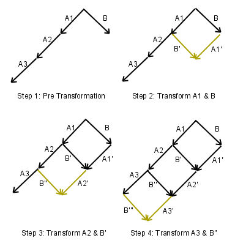

The File Tree
Beijing 2012
The Data
10100111010011010100101010011100100101101010111011110011 The File

Everything is a file
- Documents
- Pictures
- Movies
- Programs
- Devices ...
File System

Definition of a File
- Metadata (name, date, ...)
- Content (text / bytes)
- Subfiles
Even folders are files
- Some folders need a description: README
- Others need instructions: INSTALL
Operational Transformation
Compatible
- File System API: read, create, delete...
- HTTPS: web, ajax, curl, 3rd party apps
File-oriented services
- Dropbox
- FTP
- Git
- Google Drive
- torrent
- pastebin
- 9P...
Security
- HTTPS, 2048 bit certificate
- OCB3 AES file encryption
- Secure WebSockets
More secure than NSA
- Bcrypt vs SHA-2
- We can't read your encrypted files
Open Source
- GPL version 2
- Awesome community
- It's free!
History
- 2010 Fil Rouge (editor) at INSA - Code Execution (codepad, ideone) - new Operational Transofmration (timjb) - live previewsWhat about other medias ?
images videos ...DEMO
tex Plugsequence diagram Plug
Is there really any differences ?
Yes
operational transformation traduces a user operationA little bit of technology
Client: HTML5 canvas, JS, paper.js↑
websocket
↓
Server: NodeJS
Operational transformation means potential conflicts
and conflicts mean choices
drawing > delete > move
other advanced conflicts
- overlapping
Words of gratitude
- Thaddhee Tyl a.k.a espadrine
- Marijn Haverbeke (CodeMirror)
- Tim Baumann (timjb, Operational Transformation)
- Brendan Eich (JavaScript, slides)
- Jiangtao Wen (making presentation possible)
- INSA fil rouge
- Many others (tpatel, BenjBouv, benjamin augustin, gatean)
ECMAScript Edition 6
Official goals: a better language for
- applications
- libraries
- code generators

Why compile to JS?
 – lightweight syntax, conveniences
– lightweight syntax, conveniences
 – macros, uniform data abstraction (incl. DOM)
– macros, uniform data abstraction (incl. DOM)
 – pattern matching, types
– pattern matching, types
 – security, isolation
– security, isolation
 – synchronous style events
– synchronous style events
- More at altjs.org


We had always thought that Java's JVM would be the VM of the web, but it turns out that it's JavaScript. JavaScript's parser does a more efficient job... than the JVM's bytecode verifier.
JS > bytecode
- Dynamic typing ⇒ no verification
- Type inference ⇒ delayed optimization
- Would bytecode compress as well?
- Bytecode standardization would suck
- Bytecode versioning would suck more
- Low-level bytecode is future-hostile
- Many humans like writing JS
One JS, for humans and computers

Example: goto
function f() {
L0:
g();
L1:
if (p)
goto L0;
o.m();
goto L1;
}

goto considered...
- Compilers: yes please!
- Humans: DO NOT WANT
Better: proper tail calls
function f() {
function L0() {
g();
return L1(); // goto with arguments
}
function L1() {
if (p)
return L0(); // goto with arguments
o.m();
return L0(); // goto with arguments
}
return L0(); // goto with arguments
}
Cool story.
But compared to native...

NaCl?
- Impressive engineering
- Driving competition
- Not portable
- Defined by implementation
- No view source